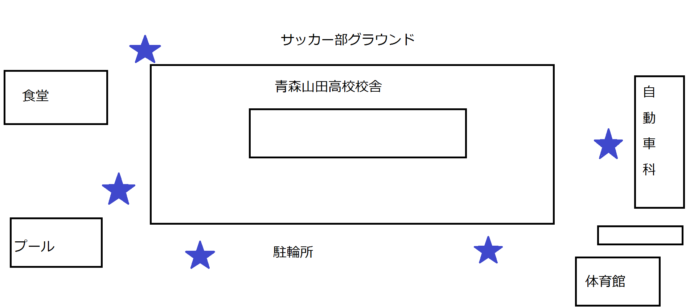

青森山田高校

青森大学と同じ系列の青森山田高校
多くの学科があり、マルチに学ぶことができる。以下の学科がある
普通科特進コース・普通科吹奏楽コース
普通科演劇コース・普通科美術コース
普通科文化教養コース・普通科スポーツコース
情報処理科・自動車科・調理科
また数多くの部活があり、全国的に有名
ここでは運動部の一部を紹介します
サッカー部...いわずとしれた名門、Jリーガーを22名も輩出
野球部...甲子園出場11回の強豪
男子新体操部...30年間で27回の団体全国優勝、15回の個人総合優勝
このほかにも福原愛や水谷隼画在籍した卓球部や藤井・垣岩ペアで有名なバトミントン部などがある